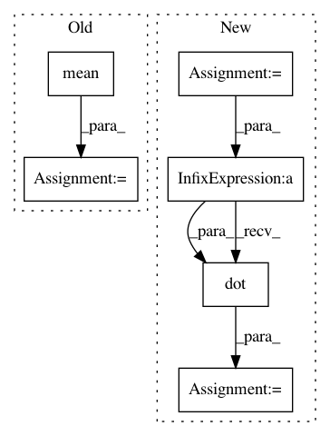

d493caa1278c158b78aa02c8f23d4f56c311f975,pymc3/variational/callbacks.py,CheckLossConvergence1,__call__,#CheckLossConvergence1#Any#Any#Any#,33
Before Change
return
diff = ((hist[-self.window_size:] - hist[-self.window_size-1:-1])
/ hist[-self.window_size-1:-1])
mean = diff.mean()
// unbiased std of mean
std = diff.std() / (self.window_size - 1)**.5
t = abs(mean / std)
p = stats.t.cdf(t, df=self.window_size) - .5
After Change
def __call__(self, approx, _, i):
if self.prev is None:
self.prev = self.flatten_shared(approx.params)
if i < self.every or i % self.every:
return
current = self.flatten_shared(approx.params)
delta = (current - self.prev)/self.prev
self.prev = current
delta[np.isnan(delta)] = 0
norm = delta.dot(delta)**.5
if norm < self.tolerance:
raise StopIteration
@staticmethod
In pattern: SUPERPATTERN
Frequency: 3
Non-data size: 6
Instances
Project Name: pymc-devs/pymc3
Commit Name: d493caa1278c158b78aa02c8f23d4f56c311f975
Time: 2017-04-14
Author: maxim.v.kochurov@gmail.com
File Name: pymc3/variational/callbacks.py
Class Name: CheckLossConvergence1
Method Name: __call__
Project Name: jindongwang/transferlearning
Commit Name: f0fe1d57b54b7670ad4586e19d4383db561e84e7
Time: 2019-12-16
Author: jindongwang@outlook.com
File Name: code/distance/mmd.py
Class Name:
Method Name: linear_mmd2
Project Name: jindongwang/transferlearning
Commit Name: f0fe1d57b54b7670ad4586e19d4383db561e84e7
Time: 2019-12-16
Author: jindongwang@outlook.com
File Name: code/deep/DDC_DeepCoral/mmd.py
Class Name: MMD_loss
Method Name: linear_mmd2